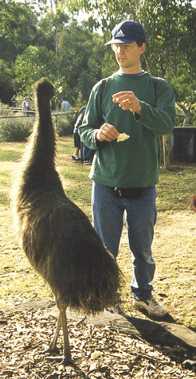
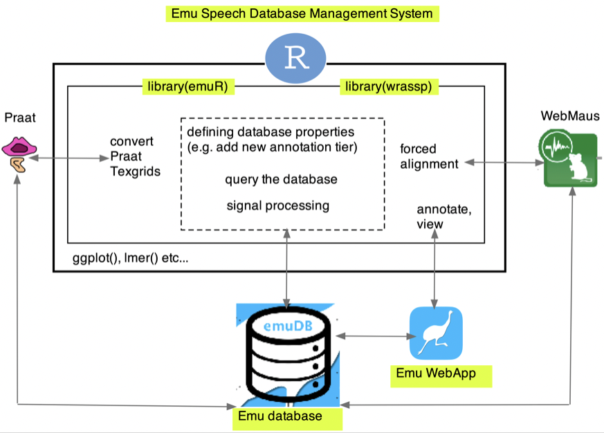

1 A schematic overview of the Emu Speech Database Management System
1.1 Background
The core idea behind Emu today is just the same as it was when it first launched in the mid-late 1980s at CSTR, Edinburgh University. At the time, it was known as APS which stood for Acoustic Phonetics in S.
The core idea behind Emu is:
- To manage speech databases, which are collections of utterances consisting of signal (waveform, formant, f0 etc) and annotation (label) files.
- To be able to query these databases: annotations can be extracted from the database. It should be straightforward to e.g. find all tokens of [i] in a database.
- These queried lists of annotations can be further queried to get the corresponding signals (e.g. find the formants of the [i] tokens extracted at the previous step).
There have been some landmark changes to Emu since the APS–Edinburgh days of the 1980s.
- Since the 1990s, Emu’s query language has handled hierarchically structured annotations: see especially Cassidy and Harrington (2001). (The name Emu evolved out of Extended MUlti-dimensional, and of course because the developers were in Australia at the time).
The query language is still in use today and the only one of its kind in existence.

The point of hierarchical annotations is to be able to query annotations at one tier with respect to another. For example the previous query could be extended to:
- Find all
[i]vowels in the first syllable of trisyllabic accented words, but only if they are preceded by a function word in any L% intonational phrase.
Since the mid-00s, the Advanced Speech Signal Processor (ASSP) toolkit developed by Michel Scheffers of the IPdS, University of Kiel has been integrated into Emu (Bombien et al. 2006). ASSP since morphed into the R package
wrasspca. 2014.In the past decade or so, the Emu engine has been completely overhauled by Raphael Winkelmann with many excellent new features (see also Winkelmann, Harrington, and Jänsch 2017), e.g.:
- Emu is launched and operates entirely within the R programming environment.
- An interactive graphical user interface for analysing and visualising data: the
Emu-webApp - Extension of the query language to include regular expressions.
- Far more rapid access to extracting annotations and their signal files from the database.
1.2 The Emu-SDMS
The following image provides a schematic overview of the Emu-SDMS.

The core components of the EMU-SDMS are:
Emu databases. These are collections of sound files, annotation files, and signal files of a particular structure, with accompanying metadata.
The Emu WebApp. This is a web-based application allowing you to access their Emu databases: to view speech signals, and to annotate them in a fast, straightforward manner, among other features. You will be introduced to the Emu WebApp in Chapter 2.
The R library
emuR, which allows you to manage the properties of a database, adding and removing annotation levels, adding and removing signals, querying the annotations and signals of a database, etc.The R library
wrassp, which is the signal processing engine of the system, including different pitch trackers, formant tracking, intensity tracking, and several other signal processing capabilities.
Most of your work with the Emu-SDMS will be done in R – the WebApp is not controlled using R, but you will generally access it using R. emuR allows you to interface with other software though, for example to convert a collection of sound files and annotations made using Praat to an Emu database as we will see in Chapter 4, and to call the Munich Automatic Segmentation system as we will see in Chapter 5.
The R integration of Emu-SDMS has the major advantage of giving you immediate access to all the other tools that are available in R, such as the plotting capabilities of ggplot() and statistical modelling with e.g. lmer().